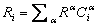
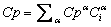

In CONTAM air is treated as an ideal gas with properties computed from the ideal gas law. The density of air is given by
| r = m/V = P/(RT) | (1) |
where
m = the mass of air in
V = a given volume,
P = the absolute pressure,
R = the gas constant for air, and
T = the absolute temperature.
The mass of air in c.v. i is the sum of the masses of the individual contaminants, a, in the c.v.
|
|
(2) |
The concentration of contaminant a in c.v. i is defined as

|
(3) |
In CONTAM concentration refers to a mass ratio rather than a volumetric ratio unless otherwise specified.
Air is a mixture of several different species. The value of the gas constant for the air in a c.v. is given by:
|
 |
(4) |
where Ri = the gas constant of species a which equals the universal gas constant, 8 314.41 J/(kmol·K), divided by the molar mass of a (kg/kmol). Similarly, for thermal calculations (an option in CONTAM for duct flow under the short time step method only), the specific heat of air in a duct segment is given by the weighted sum of the specific heats of the individual species:
|
 |
(5) |
Under typical conditions only water vapor has an impact on the properties of air and even that can be ignored as an initial approximation. There is a standard definition of species concentrations for dry air which yields an effective molar mass of 28.9645 kg/kmol and a gas constant of 287.055 J/(kg·K). ASHRAE often refers to dry air at standard conditions which are 101.325 kPa and 20 ºC and notes the density of such air is 1.20 kg/m3 [ASHRAE 2004 p 18.4]. More precisely, the density is 1.20410 kg/m3 as computed by equation (1).
NOTE: ASHRAE considers water vapor in terms of humidity ratio instead of mass concentration. The humidity ratio, W, is defined as the ratio of the mass of water vapor to the mass of dry air in the volume: W = mw / mda [ASHRAE 2005 p 6.8]. The CONTAM mass concentration, which ASHRAE refers to as specific humidity, is: Cw = mw / (mw + mda). The conversions between humidity ratio and mass concentration are Cw = W / (1+W) and W = Cw / (1–Cw).
In many cases we are interested in species concentrations that are too small to significantly affect the air density (or specific heat). These are referred to as trace concentrations. When a simulation involves only trace contaminants, CONTAM uses dry air to compute the air properties.